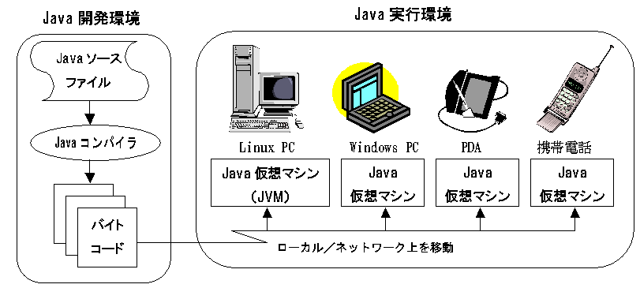

今回は初回ですので，Javaのプログラミング言語としての特徴を学んだ後，Javaの基本的な使い方を演習します．まずC言語とJavaで同じプログラムを書いて比較してみます．続いてコンパイル・実行を行って，実際にプログラムの作成から実行までを体験してみます．
本演習ではオブジェクト指向言語ののJava基礎について学習します．第1回目の今回はまず最初に簡単にC言語との違いについて学習し，次に「オブジェクト指向」言語としての特徴であるクラスについて学習します．
Java言語は，1995年にサン・マイクロによって開発された新しいプログラム言語です．オブジェクト指向を基本としていますが，CやC++と同じ構文を多く採用していて，基本データ型や演算子などはCのものがそのまま利用されていて，Cを知っている人にとっては習得しやすい言語と言えるでしょう．CやC++と大きく異なる点として，以下のようなことが挙げられます．
freeでメモリを解放する必要がなくガーベジコレクションを行う．Java言語ではマルチプラットフォームに対応するために，JavaコンパイラはCの様にそのまま実行可能なネイティブコードではなく，中間コード(バイトコード) を生成します．そして，そのバイトコードを実行する際はJavaインタプリタ(仮想マシン)を用います．そのため，Java仮想マシンがあれば，どのような環境であっても，Javaコードが実行可能です．実際に，Windows上でコンパイルして生成した中間コードはLinux上でも実行可能です．(ただし，実際には画面の大きさやキーボードの有無などの制約があるので，スマートフォンや携帯電話ではパソコン用のコードを実行させることは通常できません．)
Javaには，Webブラウザ上で実行するJava アプレットという実行形式と，Cの実行ファイルなどと同様にコマンドラインから実行する通常のJavaアプリケーションと言う形式があります．JavaアプレットはWebページに張り付けることを前提としているので，セキュリティ上の制約があって，ファイルにアクセス出来ないなどの制限があります．一方，JavaアプリケーションはすべてのJavaの機能を利用することができます．したがって，本実験では，Javaアプレットについては扱いません．ですが，GUIを用いたJavaアプリケーションのプログラムをJavaアプレットのプログラムに変更することは容易ですので，興味のある人は自力で行ってみてください．なお，JavaScriptは，名前にJavaは付いていますが，Javaの文法を一部採り入れたWebブラウザ用のスクリプト言語で，基本的に別の言語と考えた方がいいでしょう．
次に実際にC言語とJavaのサンプルプログラムを比較しながら，その違いについて学習しましょう．まずは，うるう年を表示するプログラムをC言語で示します．
#include <stdio.h>
#define TRUE 1
#define FALSE 0
#define START 1990
#define END 2110
int isleap(int y) {
if (((y % 4 == 0) && (y % 100 != 0)) || (y % 400 == 0))
return TRUE;
else
return FALSE;
}
main() {
int year;
for (year = START; year <= END; year++) {
if (isleap(year)) /* found a leap year */
printf(" %d", year);
}
printf("\n"); /* line feed */
}
以下は同様のプログラムをJavaで書いたものです．
class Leap {
static final int START = 1990;
static final int END = 2110;
static boolean isleap(int y) {
if (((y % 4 == 0) && (y % 100 != 0)) || (y % 400 == 0))
return true;
else
return false;
}
public static void main(String[] args) {
for (int year = START; year <= END; year++) {
if (isleap(year)) /* found a leap year */
System.out.print(" " + year);
}
System.out.println(); // line feed
}
}
2つを見比べてみると，ほとんどは同じですが，細かい部分に違いがあることが分かるでしょう．まず，プログラムの書き出しが，Java の方では，class Leapになっています．Javaのプログラムでは，必ず１つ以上のクラスが存在しないといけません．ここでは，Leapという名前のクラスが１つ存在していて，1行目で始まった括弧が最後の19行目で閉じられていることから分かるように，プログラム全体がクラスになっています．
クラスは，本来はオブジェクト指向におけるオブジェトのひな形の役目を果たしますが，このサンプルはオブジェクト指向言語としてのJavaの特徴をまったく利用していないので，ここでのクラスは形式的な利用にとどまっています．Java本来のクラスの利用法は次回説明します．
次に12行に注目してください． public static void main(String[] args)となっていますが，ここではmainメソッドを定義しています．メソッド(method)とは，とりあえずC言語の関数のようなものだと考えてください．詳細は後述します．C言語と同様にプログラムの実行はmainメソッドから始まります．mainメソッドはプログラム全体で１つのみ定義できます．Cとは異なり，mainの前に，public static voidが付き，引数にString[] argsをとります．これは少し長くて面倒ですが，どちらも省略できないので覚えてしまってください．C言語だと，main関数は，引数を省略してmain()，省略しないでmain(int argc, char **argv)と２通りの書き方がよく用いられますが，Javaの場合は引数の型も厳密に決まっていますので，かならず12行目の様に書く必要があります．このことは必ず覚えておいてください．
まとめると，クラスが１つの場合，Javaのプログラムは以下のようになります．
class クラス名 {
変数定義やmain以外のメソッドの定義
...
public static void main(String[] args) {
mainメソッドの中身
...
}
変数定義やmain以外のメソッドの定義
...
}
上記以外の相違点としては，2,3行目の定数の定義の仕方，5行目のboolean型，7,9行目の返り値のtrue，falseがあります．定数はC言語では，#defineとconstを用いる2通りの方法がありましたが，Javaではfinal staticという修飾子をintの前に付けます．final staticは後から値が変更されないという意味で，C言語のconstとほぼ同じ意味になります．boolean型は，true，falseの2値を取る変数の型です．C言語では：
#define TRUE 1 #define FALSE 0
としてint型が用いられていましたが，Javaにはtrue/falseだけの値をとる専用の型があります．
5行目では boolean型のメソッドを定義していますが，booleanの前にstaticがついています．mainメソッドにstaticがついているため，mainメソッドから(クラスのメソッドとしてではなく)直接呼び出すメソッドは，staticを最初に付けないといけないと覚えておいてください．
15, 17行目では画面(標準出力)に結果の出力を行っています．15行目の引数は" "+yearとなっていますが，これはyearの前にスペース(" ")を1文字表示するということです．ここでの+は文字列の結合です．yearはint型(整数型)ですが，文字列を+されると自動的にyearも文字列になって，yearの値の後ろにスペースが1つ追加された文字列が画面に出力されます．
17行目はメソッド名System.out.printlnの最後のlnが示すように，改行を出力しています．これは，System.out.print("\n");と書くことも出来ます．
JDK 5.0 以降では，C言語と同様の printf が使えます．例えば，System.out.printf("%3d %4d\n", a, b);の様に書くことも出来ます．
他に細かい違いとしては，13行目でforの中でint year = 0;と変数の定義が出来る点，17行目で書いているように//でコメントを書ける点があります．C言語と同様の/* ... */も利用できますが，//を使えば，その行の終わりまでがコメントになりますので，簡単なコメントの場合はこちらの方が便利です．C++言語を知っている人は気づいたかも知れませんが，これらはC++言語と同じです．ただし，C言語と違ってプリプロセッサはありませんので，#ifdefなどは使えません．
では，サンプルプログラムを実行しましょう．ここでは，ファイル名をLeap.javaとします．今までのC言語の演習の時と同様に，Emacsなどのエディタで入力してください．もしくは，Leap.javaを右クリックで「名前を付けてリンク先を保存」を選択してダウンロードして下さい．
Leap.javaのファイルの準備ができたら，コンパイルは以下のようにします．
javac Leap.java
エラーメッセージが表示されなければOKです．これで，Leap.classというファイルが生成されているはずです．ここで注意することは，javacでコンパイルして出力されるファイル名は，ソースファイル名にかかわらず，ソースファイル中のクラス名に".class"をつけたものとなります．試しに，ファイル名をLeap.javaではなく，samp.javaにしてコンパイルしてみましょう．
次に実行してみましょう．実行するときは以下のようにします．
java Leap
これで，Javaプログラムが実行できました．javaコマンドは，Javaのバイトコードを解釈するためのインタプリタの役目を果たしています．C言語のコンパイル時はネイティブコードが生成されるので，実行ファイル名のみで実行可能でしたが，Javaの場合は必ずJavaインタプリタのコマンド名の後にクラス名を指定することになっています．
なお，ここで注意するのは，".class"をつけてはいけないことです．mainメソッドの含まれるクラス名を指定します．コンパイル時には，必ず ".java"を付けることになっていますので，混同しないようにきを付けてください．
CEDには，Javaの統合開発環境であるEclipse(エクリプス)がインストールされています．統合開発環境とは，エディタ，Javaコンパイラ，デバッガが一体となったものです．メソッド名の候補を表示してくれたり，プログラムの作成途中でもエラーを教えてくれるなど，便利な機能が満載ですので，これ以降はEclipseを使いましょう．
Eclipseの詳しい使い方は「Eclipse 入門」などとネット検索すればいくらでも見つかるでしょう．Leap.javaを今度はEclipseを使って作って実行してください．以下はJ3課題用の補足です．
Leapを指定します．ここまでは，単にC言語をJavaにそのまま置き換えただけでしたが，それではJavaプログラミングとはいえません．Javaの大きな特徴は「オブジェクト指向言語」であることです．通常，Javaではオブジェクトを中心に考えてプログラミングしていく，「オブジェクト指向プログラミング」を行います．これが，Javaらしいプログラミングスタイルと言えます．
では，ここからはいよいよ「オブジェクト指向」について学んでいきましょう．初めて習う考え方なので，最初はピンとは来ないかも知れませんが，本演習でのJavaでのプログラミングを通して，徐々に「オブジェクト指向」に慣れていきましょう．
これから学んでいくJava言語は，「オブジェクト指向」に基づくプログラミング言語です．オブジェクト指向は，システムをモデル化するための技法の一つで，システムを相互にやりとりする多くのオブジェクトの集合として考える手法です．
オブジェクトとは，実世界の「もの」「役割」を抽象化した概念で，コンピュータで取り扱う問題の中に存在する対象をそのままプログラミングの基本単位として表現する方法です．オブジェクトでは，データとそのデータを操作するための手続きが一体となっているという特徴があります．
今まで習ってきたC言語によるプログラミングでは，主にシステムを機能単位で分割して，機能を実現するためのモジュールの集合としてシステムの構造の設計を行う「構造化プログラミング」が行われてきました．それに対して「オブジェクト指向プログラミング」では，機能を分割するのではなく，実世界の「もの」や「役割」にあたるオブジェクトを単位として，オブジェクトの集合としてシステムを構築します．
以下の図に示すように，C言語に代表される手続き型言語では，プログラムに必要な機能を実現するための手続き(関数)と，データが別々に存在しています．一方，Javaに代表されるオブジェクト指向プログラミングでは，機能を実現する手続き(メソッド)とそれぞれの手続きに関係するデータをひとまとまりの単位(オブジェクト)として表現します．こうすることによって，より進んだプログラムのモジュール化が実現し，効率的なプログラミングが可能となります．
オブジェクト指向言語では，メソッドと，そのメソッドが操作するデータをまとめてオブジェクトとし，これらを関係づけることでプログラムを構成します．オブジェクトは，C言語での構造体に，その構造体のデータを扱う関数を付加したものである考えることもできます．
一般にオブジェクト指向プログラミングでは，複数のオブジェクトを用意します．異なるオブジェクト同士は，メッセージをやり取りすることで協調動作します．代表的なオブジェクト指向言語としては，C++，SmallTalk，Objective-Cなどがあり，Javaもその中の１つです．
オブジェクト指向言語におけるオブジェクトとは，
つまり，オブジェクトは自立した存在で，データ構造とその操作を内部に持っているということが言えます．オブジェクトはメッセージによってのみメソッドが呼び出され，個々のオブジェクトの中身は他のオブジェクトからは直接操作することはできません．これは，カプセル化と呼ばれています．このように個々のオブジェクトの独立性が高いという特徴があります．
今までの抽象的な説明では，良く分からない人もいると思うので，ここでもう少し具体的な例を考えてみましょう．オブジェクトを実世界の「モノ」に例えて考えてみます．
「テレビ」オブジェクトを考えてみます．
テレビには，内部状態として「電源ON/OFF」「チャンネル」「音量」などがあります．それを操作するメソッドとしては「電源スイッチ」「チャンネルボタン」「音量ボタン」があげられます．
我々はテレビの中身を良く知らないのに，「電源スイッチ」「チャンネルボタン」「音量ボタン」などを用いて，「テレビ」にメッセージを送ることによって，その内部状態である「電源ON/OFF」「チャンネル」「音量」を適切にコントロールすることが出来ます．これは，「テレビ」がオブジェクトとしての特性を備えているからであると言えます．
他にもエアコンや炊飯器など，世の中にある家電のほとんどが「オブジェクト」としての性質を備えています．その他，中身がよく分からなくてブラックボックスになっているけど，便利に使えるものはみんな「オブジェクト」であると言えるでしょう．
一方，計算機に関係のあるものでは，前期に学んだ スタック(stack)，キュー(queue) などの簡単なデータ構造を思い浮かべるといいでしょう．スタックはpush, popでのみ，キューはput, getでのみデータの入出力を行います．内部の実装は配列であろうと，リストであろうと，データ構造を利用するユーザには関係なく，入力と出力のメソッドが用意されて，データ構造としての振舞いがそれぞれスタックやキューになっていれば良いわけで，まさに「オブジェクト」であるといえます．
C言語でスタックを実現すると，ポインタ操作の誤りなどによってスタックの内容が書き換えられてしまう可能性がありますが，オブジェクト指向言語を用いれば，スタックの中身はメソッドを通してしか変更することができなくなります．
テレビは映像を見るための「オブジェクト」，スタックやキューはデータを記録しておく「オブジェクト」ですが，他にも，何らかの属性(attribute)を持った物は，属性情報を内部状態であると考えると，すべてオブジェクトとして捉えることができます．例えば，皆さん自身は名前，学籍番号，学年など学生としての様々な属性情報を持っているので，「学生オブジェクト」として考えることができます．他にも教員の情報を持った「教員オブジェクト」，履修者や担当教員の情報をもった「授業オブジェクト」，所属している学生や教員の情報を持った「大学オブジェクト」など，人や人が属している組織などはすべて「オブジェクト」としての性質を持っています．
また人だけでなくて，家電のようにブラックボックス化されている機能を持っていない物でも，ほとんどの「物」は何らかの属性を持っているので「オブジェクト」としての性質を持っています．例えば，「本オブジェクト」なら，本の名前，著者名，本の値段，出版社名など，様々な「属性」を持っています．他にも，例えば「椅子オブジェクト」なら，椅子の高さや幅，奥行き，足の本数など，やはり様々な「属性」を持っています．「オブジェクト」の元々の意味は「物」ということですので，「物」ならばほとんど例外なく「オブジェクト」としての性質を備えていると言えます．
Java言語では，ほとんど全てのデータはオブジェクトです．例えば文字列や配列もオブジェクトです．
文字列はStringオブジェクトです．StringオブジェクトはC言語のように文字の配列ではありません．次のようにして文字列を作ります．
String str = "mojiretsu";
文字の配列ではないので，次のC言語の例のように，配列の添字やポインタを使って文字にアクセスすることはできません．
printf("%c\n", str[3]);
char *p = str;
printf("%c\n", *(p + 3));
Javaでは，文字列のメソッドを通してこれらの操作を行います．Javaが提供しているクラスのメソッドとそれらの使い方はAPIドキュメントにあります．左下のクラス名一覧からStringを選ぶと，Stringオブジェクトの使い型が表示されます．これによると，文字列中の文字にアクセスするにはcharAtメソッドを使えばよいことが分かります．charAtを使って，"mojiretsu"の3文字目を表示するプログラムは次のようになります．
public class StringExample {
public static void main(String[] args) {
String str = "mojiretsu";
System.out.println(str.charAt(3));
}
}
Stringオブジェクトの便利なメソッドを挙げておきます．
charAt(int i)str[])compareTo(String s)sと比較する(C言語のstrcmp)startsWith(String s)sで始まるかどうかを返す次は配列です．Cでの
int a[100]; double b[10][10];
をJavaで行うには，
int[] a = new int[100]; double[][] b = new double[10][10];とします．
newはオブジェクトを作る命令です．new int[100];によって，長さ100の「int配列オブジェクト」が作られます．「int配列オブジェクト」の型はint[]と書きます．
使い方は，Cと同様に
a[10] = 0; b[3][3] = 0.5;
のようにします．
次の5つの文字列からなる配列を作り，その配列中に"an"という文字列がいくつ入っているかと，"an"で始まる文字列がいくつ入っているかを，compareToとstartsWithを使って調べて表示するプログラムを作ってください．
a ant an grasshopper andプログラムの雛形:
public class CountAn {
public static void main(String[] args) {
String[] str = /* 5要素の文字列の配列を作る */;
int i;
int count;
str[0] = "a";
str[1] = "ant";
str[2] = "an";
str[3] = "grasshopper";
str[4] = "and";
count = 0;
for (i = 0; i < 5; i++) {
if (/* str[i] が "an" である */)
count++;
}
System.out.println("an: " + count);
count = 0;
/* anで始まる文字列を数える */
System.out.println("an...: " + count);
}
}
compareToは文字列が一致している時は0を返します．
クラス(class)は，オブジェクトのひな型を定義します．つまり，データ構造とメソッドの具体的な実装方法が記述されます．「テレビ」の例で言えば，設計書のようなものです．「テレビ」が設計書に基づいて大量に生産される様に，実際のオブジェクトの実体はクラスに基づいて生成されます．１つのクラスについて，そのオブジェクトはいくつでも生成することが可能です．
オブジェクト指向言語では，すべてのオブジェクトは何らかのクラスに属しています．オブジェクトがあるクラスに属している時，そのオブジェクトはそのクラスのインスタンス(instance)であると言います．
以上をまとめると，インスタンスはクラスから生成されるオブジェクトのことで，クラスはインスタンスの構造（データ構造とメソッド）を記述します．ある時点でのインスタンスの状態はそれまでにそのインスタンスに対して実行された操作によって決まり，通常は同じクラスの別のインスタンスには影響を受けません．
では，次にJavaでのクラスの記述方法について説明しましょう．上記の説明が良く理解できなかった人は，とりあえず，先にサンプルプログラムを実行してみてから，また戻ってきて，上記の説明を読んでみましょう．
例として，学生に関するデータとその操作を表現するStudentクラスを考えます．以下のように記述してみます．
class Student {
String id; // 学籍番号
String name; // 名前
int grade; // 成績
void print() {
System.out.println("ID : " + id);
System.out.println("Name : " + name);
System.out.println("Grade: " + grade);
}
}
このようにクラスの定義は，class <クラス名>からはじまります．実は，これは最初に説明したJavaの基本的なプログラムにも出てきました．Javaでは，すべてのプログラムはオブジェクトによって構成されることになっているので，前回はmainメソッドを含むクラスだけがある，クラスが１つだけのプログラムを作っていたのでした．
上記のクラスの定義は，よくみるとC言語の構造体(struct)によく似ていますね．実際，構造体に関数を加えたものがクラス(class)であるとも言うことができます．
Javaでは，クラス中の変数の記述をフィールド(field)，関数をメソッド(method)といいます．それぞれ，「メンバ変数」「メンバ関数」ともいい，この２つをまとめてクラスのメンバ(member)といいます．Studentクラスでは2〜4行目でフィールドの定義，6〜10行目でメソッドの定義を行っています．2,3行目では，Java のクラスライブラリに予め用意されているStringクラスを用いています．Stringクラスは特別なクラスで，name = "Suzuki";のように直接文字列を代入することが可能です．6行目からのメソッドでは，System.out.printlnを用いて，Studentクラスの3種類の内部データを表示しています．メソッドから同一クラス内のフィールドに対してアクセスする場合は，そのまま変数名を記述します．
まとめると，クラスの定義は一般に以下のようになります．
class クラス名 {
フィールドの定義
...
メソッドの定義
...
}
メソッドは，
戻り値の型 メソッド名(引数) {
文;
...
return 式; // void 型の場合は不要
}
となります．
では，このStudentクラスを利用するmainメソッドを含んだクラスを用意しましょう．このクラスとStudentクラスの両方を含むソースファイルはStudent.javaです．
class Main {
public static void main(String[] args) {
Student st = new Student();
st.id = "01110";
st.name = "Suzuki";
st.grade = 100;
st.print();
}
}
ここでは，mainメソッドのみをメソッドとして持つ，Mainクラスを用意します．Javaではクラス名は大文字から始めるという慣習があります．一方，変数やメソッドの名前は小文字で始めるのが一般的です．フィールドはありません．13行目は前回同様mainメソッドです．
14行目では，Student stで，Studentクラス型のオブジェクト変数stを宣言しています．そして，その変数stに対して，new Student()で生成したStudentクラスのオブジェクト(インスタンス)を代入しています．一般に，new <クラス名>()でそのクラスのオブジェクトを生成することが出来ます．
このようにJavaでは，オブジェクト変数とオブジェクト(インスタンス)が明確に区別されていて，それぞれ別々に宣言，生成する必要があります．いわば，オブジェクト変数はオブジェクトを指す「ポインタ変数」の様なもので，Student st1;として，st1 = st;とすれば，stとst1は同じオブジェクトを指すことができます．また，Student st;とだけして，オブジェクトを代入しない場合，初期値はst == nullとなっています．ここで，nullという名前の特別な値は，C言語のNULLに相当し，どのオブジェクトも指していないことを表します．
Javaでは，int, doubleなど基本データ型を引数とするメソッド呼出しでは値渡しとなりますが，オブジェクトを引数とするメソッド呼出しでは参照渡しになります．
なお，文字列はStringオブジェクトで参照渡しですが，"A" + "B"のように文字列に操作を加えると，新しい別の文字列オブジェクト(この場合"AB")が生成されることになって，元々のオブジェクトは変化しないでメモリ中に残っているので，Stringオブジェクトについては表面上は値渡しと同じになります．
16〜18行目では，Studentオブジェクトのフィールドで定義された変数(インスタンス変数(instance variable)とよぶ)に対して，値を代入しています．C言語の構造体と同様に，.(ピリオド)を用いて，<オブジェクト変数名>.<インスタンス変数名>とすることによって，オブジェクト内の変数を直接アクセスすることができます．メソッドから同一クラス内のフィールドに対してアクセスする場合とは異なりますので，注意してください．
なお，Javaでは，プログラムを実行するにはmainメソッドを含むクラス名を javaコマンドの後に指定することになっていますので，このプログラムを実行するには，java Studentではなくて，必ずjava Mainとしなければいけないことに注意してください．
このように，いわゆる「アプリケーション」，つまりユーザが実行したいあるプログラムは，たくさんのインスタンスが集まったものとして実現されます．この例では，MainクラスとStudentクラスのインスタンスが1つずつ作られ，利用されていることになります．(厳密には，Mainクラスのインスタンスは存在しません．興味がある人はstaticメソッドについて調べてみましょう．)なお，クラスを整理するために，パッケージ(package)という機能も用意されています．クラスが多数になってきた時，いくつかのクラスを1つのパッケージに入れて，まとめて管理できるようにするためです．Eclipseを使うときなど，混乱しないように注意してください．
では，次にStudentオブジェクトを2人分生成してみましょう．このクラスとStudentクラスの両方を含むソースファイルはStudent2.javaです．
class Main2 {
public static void main(String[] args) {
Student st = new Student();
Student st2 = new Student();
st.id = "01110"; st2.id = "01111";
st.name = "Suzuki"; st2.name = "Yamada";
st.grade = 100; st2.grade = 80;
st.print();
st2.print();
}
}
14行目，15行目で2つのStudentオブジェクトを生成しています．その後，それぞれに値を代入しています．21行目でst2.print() を呼び出していますが，20行目のst.print()とは出力結果が異なります．それぞれ対応するオブジェクトのフィールドの中身が表示されます．このように，メソッドは対応するオブジェクトのデータを処理することになります．
でも，あれ？ と思った人もいるかも知れません．オブジェクト指向では，オブジェクトの内部にはメソッドを通してしかアクセスできないということになっていたのでは？ と思われるかもしれません．Javaでは，Cの構造体と同様に，標準ではインスタンス変数に外部からアクセスすることが可能になっています．これを禁止するには，フィールドの変数定義の前に，private修飾子を付けます．こうすると，その変数は同一クラス内のメソッドからしか参照することが出来なくなります．このprivate修飾子を用いることによって，データのカプセル化（情報隠蔽）が実現できます．
private修飾子を付けるようにして，不用意な外部からのアクセスを防ぐようにしましょう．
private修飾子を付けると外部からはそのインスタンス変数にアクセスできなくなってしまいます．そこで，プライベートデータに外部からアクセスするためには，privateなインスタンス変数に値をセットするためのメソッドと，その値を参照するためのメソッドを用意する必要があります．
Studentクラスのフィールドにprivateをつけると次のようになります．
class Student {
private String id; // 学籍番号
private String name; // 名前
private int grade; // 成績
void print() {
System.out.println("ID : " + id);
System.out.println("Name : " + name);
System.out.println("Grade: " + grade);
}
}
mainメソッドは修正しないでそのままで，サンプルプログラム(Student2.javaの方です)のStudentクラスのすべてのフィールドに，上記の様にprivate修飾子をつけてみて下さい．このように定義したStudentクラスを用いると，コンパイル時にどのようなことが起こるでしょうか？試してみてください．
また，Studentクラス内のvoid print()をprivate void print()に変更するとどうなるでしょうか？ 試してみてください．
練習問題2の結果から分かるように，private修飾子を付けると，インスタンス変数id，name，gradeには外部からアクセスすることができませんので，値をセットすることができず，結局外部から利用できないクラスになってしまいます．また，メソッドにprivateを付けると，Studentクラス内のメソッド以外からは呼び出すことができなくなります．
データがセットできないと，オブジェクトの存在する意味がありませんので，privateフィールドにデータをセットするprivateでないメソッドをStudentクラス内に用意します．Studentクラス内のメソッドからは，privateなインスタンス変数にも問題なくアクセスできます．
次のように引数で受け取った値をインスタンス変数にセットするだけのメソッドを用意します．
void setId(String i) {
id = i;
}
void setName(String n) {
name = n;
}
void setGrade(int g) {
grade = g;
}
もし，引数の変数名とインスタンス変数の名前が同じだとどうなるでしょう？その場合は，引数の変数名がメソッド内のローカル変数ということで，優先されます．(C言語でもそうでしたね．）このような場合には， this修飾子をインスタンス変数の名前の前につけることで，ローカル変数と区別することが可能です．thisが付いている変数がインスタンス変数を表し，付いていない方は引数のローカル変数を表します．thisを使うと以下のようにも書くことができます．
void setId(String id) {
this.id = id;
}
void setName(String name) {
this.name = name;
}
void setGrade(int grade) {
this.grade = grade;
}
サンプルプログラムStudent2.javaのmainメソッドを上記のデータをセットするだけのメソッドを利用するように書き換えて下さい．Studentクラスにprivate修飾子を付ける前と同じ動作をすることを実行結果で確認してください．
3種類の値(ID，名前，成績)を一度にセットするメソッドvoid set(String id0, String name0, int grade0)をStudent2.javaのStudentクラス内に追加して下さい．さらに，mainメソッドを変更して実行結果を確認してください．
練習問題3のようにインスタンス変数に値をセットするメソッドを用意すると，その中で値の範囲のチェックなどを行うことができます．インスタンス変数gradeが 常に0から100までの値をとるようにsetメソッドに値チェック機能を追加しましょう．ここでは，0未満の時はgrade = 0，100より大きいときはgrade = 100としましょう．
実際に0未満や100より大きい数を入力して，チェックがうまく機能しているかどうか結果を確認してください．
Java では，フィールドに対する修飾子として，private，public，protected，「なし」の4通りがあります．ここでは，外部に非公開のprivate，公開のpublic，publicと同様に公開の「なし」を覚えてください．実際には「なし」とpublicの間には違いがありますが，それは次回以降に説明します．protectedはクラスの継承(inheritance)を行うときに使われますので，次週以降，継承と併せて説明します．
4通りの修飾子は，メソッドに関しても同様に用いられ，privateメソッドは同一クラス内のメソッドからしか呼び出すことが出来ません．
publicかprivateかが明確になるようにどちらかの修飾子を付けるようにします．皆さんもそのような習慣を付けた方がいいでしょう．
Javaには，newを用いてオブジェクトを生成する時に，内部のフィールドの値を設定する方法があります．それをコンストラクタ(constructor)といいます．newを行う時には，必ず クラス名の後に()がつきましたが，実はこの括弧の中に引数を書いて，コンストラクタに渡すことが出来ます．これは，newを行ったときに実行されるメソッドともいえるもので，以下のように記述します．
class Student {
private String id; // 学籍番号
private String name; // 名前
private int grade; // 成績
public Student(String id, String name, int grade) {
this.id = id; this.name = name; this.grade = grade;
// gradeは範囲チェックした方がよい．
}
....
}
コンストラクタは，6〜9行目にあたります．このようにコンストラクタは，クラス名と同じ名前のメソッドで，返り値はないので，型名はありません．コンストラクタを呼び出すとき，つまりオブジェクトを作成するときには
Student st = new Student("123", "Ichiro", 100);
のようにnewクラス名のあとの()内に引数を記述します．
なお，コンストラクタは複数定義することが可能で，引数の並びによって区別されます．また，1つ以上のコンストラクタを定義すると，デフォルトの引数なしのコンストラクタは利用出来なくなります．どうしても利用したい場合は，
public Student() {}
のように引数なしの何も動作しないコンストラクタを明示的に記述する必要があります．なお，コンストラクタをprivateにすることも可能ですが，特殊な状況でしか利用しませんので，コンストラクタは常にpublicと覚えてしまって構いません．
直接代入やsetメソッドを用いる代わりに，コンストラクタで値をセットしてみてください．さらに実行結果が同じになることを確認してください．
これで，クラスの基本は説明しました．それでは，やや大きなクラスの例Turtle.javaを眺めてみましょう．内容について細かい部分は分かる必要はありませんが，privateやpublicのフィールドと，たくさんのメソッドがTurtleクラスの中に記述されているのが分かると思います．
今度は先ほどのStudentクラスを利用して，StudentクラスをフィールドメンバにもつLessonクラスを考えてみましょう．
class Lesson {
private String name; // 課題名
private String teacher; // 担当者
private int max; // 最大履修者数
private int num; // 登録履修者数
private Student[] st; // Studentの配列
public Lesson(String name, String teacher, int max) {
this.name = name;
this.teacher = teacher;
this.max = max;
this.num = 0; // numは0に初期化
st = new Student[max]; // 配列の確保(オブジェクトは別に生成する必要あり)
}
public void add(Student s) {
st[this.num++] = s;
}
public void print() {
// ここに System.out.print や Studentオブジェクトの
// 中身の表示(printShortメソッドの呼び出し)を追加しましょう．
System.out.println("----------");
}
}
ここで注意する点としては，6行目のStudentクラスの配列の定義では，配列自体は確保されないので，12行目のコンストラクタの中で配列のサイズを指定して，確保してやる必要があります．さらに，これではオブジェクト変数の配列が確保されただけですので，オブジェクト自体は1つずつnewを用いて生成し，この配列に代入してやる必要があります．ここでは，Student型の変数を引数にとるpublicメソッドaddを用意して，外部からStudentオブジェクトをLessonオブジェクトに登録できるようにしました．
なお，Studentクラスには，学籍番号，名前，成績を1行で表示するprintShortを追加して下さい．これをLessonクラスのprintから呼ぶことにします．
public void printShort() {
System.out.println(id + ", " + name + ", " + grade);
}
このLessonクラスを利用するには，
Lesson l = new Lesson("Pro Enshu", "Yanai", 100);
l.add(new Student("01220", "Dentsu Taro", 80));
などとします．なお，C言語では通常，malloc関数で構造体のメモリを確保した場合は，後でfree関数でメモリ解放するために一度ポインタ変数に代入して覚えておきますが，Javaの場合はシステムがガーベジコレクション(ごみ集め)と呼ばれる処理によって自動的にメモリ解放しますので，メモリ解放のことは考える必要がなく，引数でnewとしてオブジェクトを生成して渡してやることがよく行われます．
Lessonクラスのすべてのフィールドの内容を表示するメソッドvoid printを完成させてください．例えば，表示は以下のようになります．
Lesson : Pro Enshu Teacher : Yanai Number of Students: 4 012200, Dentsu Taro, 80 012205, Uec Jiro, 54 012207, Chofu Saburo, 70 012210, Enshu Shiro, 60 ----------
for文を使って，st[0]，...，st[num-1]のオブジェクトについて，順番にStudentクラスのprintShortメソッドを呼び出しましょう．ループ変数をiとすると，st[i].printShort()で呼び出せます．
今回の最初のサンプルプログラムのMainクラスを参考にして，mainメソッドを持ったクラスを実装して，必ずStudentを3名分以上登録して，Lessonクラスのprintメソッドが正しく動作するか確認してください．
ソースコードと実行結果の両方を一緒にWebClassシステムに貼り付けて提出してください．
Lessonクラスに，登録データを学生番号の昇順，名前のアルファベット順，成績の降順でソートするメソッドvoid sortId()，void sortName()，void sortGrade()を追加しましょう．なお，文字列の比較は，compareToを利用します．str1.compareTo(str2)で，str1がstr2よりも辞書順で前にあるときは負の値，等しいときは0，後にある場合は正の値を返します．
ソートは，次のバブルソートのコードを参考にして下さい．
void bubbleSort(int n) {
int i, j, t;
for (i = n; i > 1; i--)
for (j = 1; j < i; j++)
if (a[j-1] > a[j]) {
t = a[j-1]; a[j-1] = a[j]; a[j] = t;
}
}
もしくは，java.util.Arrays.sortメソッドを利用することもできます．ただし，インタフェースについての知識が必要なので，Java熟達者向けです．ジェネリクスについても分かっている必要があります．
Lessonクラスは生成時に最大履修者数(max)を指定しています．では，登録する生徒数が履修者を超えた場合に何が起きるか，試してみましょう．さらに，そのような場合には人数超過であるという警告を表示し，その生徒については追加せず，mainメソッドが最後まで(つまり，Lessonクラスのprint()メソッドの呼出しがきちんと終了するまで)走るように修正を加えてみてください．